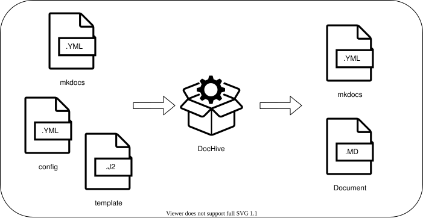
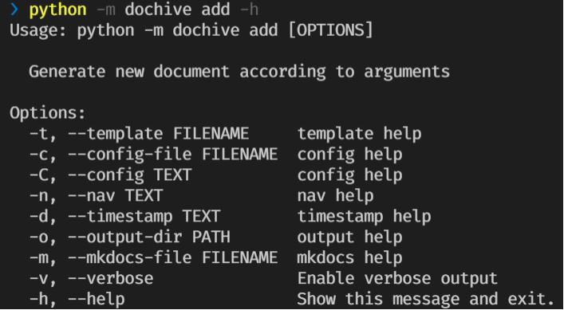
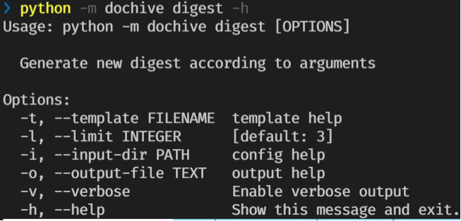

Introducing, DocHive!
Posted by Jason Bolden on Nov 17, 2021
After reusing the code powering this blog across multiple projects, a definite pattern has come to light. At its core, the profile_builder module takes a list of key/value pairs as input, populates a documents template, and updates a mkdocs configuration. This can be leveraged across a multitude of projects to drive many use cases. It only makes sense to rip out the code and turn it into a proper piece of software. This is the start of the document archiver, DocHive.
Conceptual
DocHive is intended to be a simple utility. Given three inputs, DocHive will output a new document for your archive and update the nav section of a mkdocs config file. For now, DocHive will be built to compliment mkdocs and leverages Jinja for templates. DocHive is not a cookiecutter replacement.

General Usage
Continuing with the theme of simplicity, DocHive will have 2 commands initially.
add
The add command creates a new document and adds it to the archive. The following options describe ways to manipulate the generated document and how mkdocs should navigate to it.

addDescription of proposed command options:
--template- jinja template to render the new doc--config-file- yaml file containing key/value pairs to populate the template--config- inline key/value pair to input on the commandline--nav- navigation path in the mkdocs config to add the new doc (supports date format codes)--timestamp- timestamp used to populate date format codes (defaults to time of execution)--output-dir- directory to output generated doc--mkdocs-file- mkdocs yaml file to update with new doc addition
digest
The digest command reads metadata from the last N documents in the archive and populates a template file using them. The immediate use case this addresses is, for example, a "Recent Posts" section of a blog page. The digest command can be used to populate cards for the 3 most recent posts to the blog.
The metadata is simply yaml formatted data at the top of the document in a --- blocked section. For example:
1 2 3 4 5 6 | |

digestDescription of proposed command options:
--template- jinja template to render the digest doc--limit- the most recent N docs to read from--input-dir- the doc directory to search--output-file- filename of the new digest doc
Expansion
Packaging
Python packaging will be the next step in DocHive's evolution once the general commands are fully supported and documented. Packaging is more or less the bow on top. It's not necessary, but it gives the tool that official 🤏
GitHub Action
Static document sites for software projects typically have a section that would be considered an archive.
- Release Notes
- Root Cause Analysis
- Devlogs
- Proof of Concepts
Assuming these projects utilize GitHub Actions for CI/CD, it would be great to create an action that:
- Adds new documents using Issue bodies as input
- Creates a digest file using recent files in a directory
This could then be incorporated in the automation pipeline, making documentation a bit easier to approach. The main advantage here is simplifying the use of DocHive within Actions. The developer would no longer need to install python nor the dependencies necessary to run DocHive in their job. Just add the action and populate the options.
Conclusion
Updates on DocHive will mainly live on the Project Site.
Comments
Continue the discussion here!